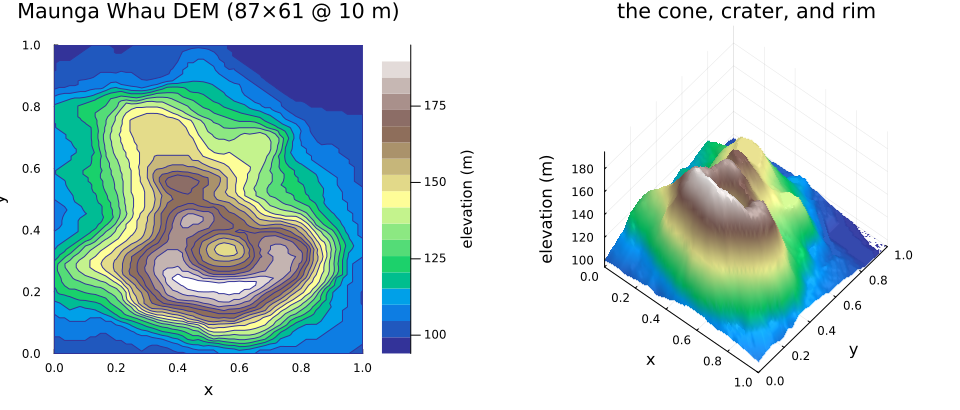
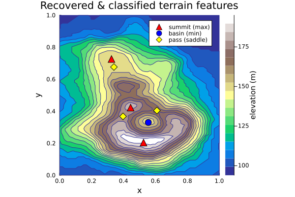

Volcano terrain: Morse critical points of a real elevation model
Critical-point extraction is not just for toy potentials. A digital elevation model (DEM) is a measured scalar field h(x, y), and its Morse critical points are literal landforms: summits are maxima, basins / crater floors are minima, and mountain passes (cols) are saddles. Geostatistical interpolation of terrain — kriging — is Gaussian-process regression, so a DEM is a natural home for the same derivative-GP machinery the Müller–Brown example used on a chemical potential.
Here we take the classic Maunga Whau (Mt Eden) volcano DEM — the public-domain R volcano dataset, an 87×61 grid on a 10 m lattice — and, from elevation samples, recover and Morse-classify its critical points: the summit ring, the crater, and the passes between them.
Setup
ENV["GKSwstype"] = "100" ## GR headless rendering (no display required)
using Magpie, KernelFunctions, LinearAlgebra
using DelimitedFiles: readdlm
using Statistics: mean, std
using Plots; gr()Plots.GRBackend()The terrain
Load the DEM (bundled as a CSV of integer metres; no dataset dependency) and z-score the elevations so a unit-variance kernel is well-scaled. We work in normalized [0,1]² map coordinates and interpolate the grid bilinearly to evaluate h at arbitrary query points.
raw = readdlm(joinpath(pkgdir(Magpie), "examples", "data", "volcano.csv"), ',', Int)
nrow, ncol = size(raw)
Zraw = Float64.(raw)
μz, σz = mean(Zraw), std(Zraw)
Z = (Zraw .- μz) ./ σz ## z-scored elevation field on the grid
function bilinear(M, x, y) ## sample grid M at normalized (x,y) ∈ [0,1]²
nr, nc = size(M)
ci = clamp(x * (nc - 1) + 1, 1.0, Float64(nc)); ri = clamp(y * (nr - 1) + 1, 1.0, Float64(nr))
c0, r0 = floor(Int, ci), floor(Int, ri); c1, r1 = min(c0 + 1, nc), min(r0 + 1, nr)
dc, dr = ci - c0, ri - r0
return (1 - dc) * (1 - dr) * M[r0, c0] + dc * (1 - dr) * M[r0, c1] +
(1 - dc) * dr * M[r1, c0] + dc * dr * M[r1, c1]
end
hz(p) = bilinear(Z, p[1], p[2]) ## z-scored elevation (what the GP fits)
hm(p) = bilinear(Zraw, p[1], p[2]) ## elevation in metres (for labelling)
xs = range(0, 1; length = ncol); ys = range(0, 1; length = nrow)
Zm = [Zraw[r, c] for r in 1:nrow, c in 1:ncol]
plt_contour = contourf(
xs, ys, Zm; levels = 18, c = :terrain, colorbar_title = "elevation (m)",
aspect_ratio = :equal, xlims = (0, 1), ylims = (0, 1),
xlabel = "x", ylabel = "y", title = "Maunga Whau DEM (87×61 @ 10 m)"
)
plt_surface = surface(
xs, ys, Zm; c = :terrain, colorbar = false, camera = (40, 55),
xlabel = "x", ylabel = "y", zlabel = "elevation (m)", title = "the cone, crater, and rim"
)
plot(plt_contour, plt_surface; layout = (1, 2), size = (960, 410))
The cone rises to a summit ring around a central crater; the rim is notched by several passes. Those are the maxima, minimum, and saddles we expect the extractor to find.
Fit a GP and extract the critical points
Condition an ExactGP on a coverage sample of the DEM (a step-4 subgrid, ~350 points) and fit the lengthscales and signal variance with Magpie.fit. grad_predict then gives the posterior gradient mean μ∇, gradient variance Σ∇, and mean Hessian H̄; multi-start Newton finds the gradient-zeros and classify types them by Morse index. The terrain has a mild east–west vs north–south anisotropy (the cone is slightly elongated), so we use an ARD squared-exponential kernel that fits a separate lengthscale per map direction.
function critical_points(g, box; per_axis = 35, ε = 1.0e-3, restol = 5.0e-3, maxvar = 1.2)
pol = [newton_polish(g, x; box = box, iters = 20) for x in grid_points(box; per_axis = per_axis)]
conv = filter(p -> norm(p[2]) < restol, pol)
uniq = unique(p -> round.(p[1]; digits = 2), conv)
cps = map(uniq) do (x, _, H)
(point = x, kind = classify(H; ε = ε), gvar = maximum(grad_predict(g, x)[2]))
end
return filter(cps) do c ## two filters for finite-DEM artifacts:
all(0.06 .< c.point .< 0.94) && ## interior mask — drop boundary edge effects
c.gvar ≤ maxvar ## gradient-variance prune — drop under-pinned zeros
end
end
box = Box([0.0, 0.0], [1.0, 1.0])
step = 4
Xs = [[xs[c], ys[r]] for r in 1:step:nrow for c in 1:step:ncol]
Ys = [Z[r, c] for r in 1:step:nrow for c in 1:step:ncol]
g = update(ExactGP(with_lengthscale(SqExponentialKernel(), [1 / 6, 1 / 6]); noise = 0.01), Xs, Ys)
g = Magpie.fit(g; restarts = 5) # fits per-axis lengthscales for the terrain
@info "fitted ARD lengthscales (x, y)" ℓ = round.(1 ./ g.prior.kernel.kernel.transform.v; digits = 3)
cps = critical_points(g, box)
nmax = count(c -> c.kind == :max, cps)
nmin = count(c -> c.kind == :min, cps)
nsad = count(c -> c.kind == :saddle, cps)
@info "recovered terrain critical points" n_samples = length(Xs) maxima = nmax minima = nmin saddles = nsad┌ Info: fitted ARD lengthscales (x, y)
│ ℓ =
│ 2-element Vector{Float64}:
│ 0.158
└ 0.095
┌ Info: recovered terrain critical points
│ n_samples = 352
│ maxima = 3
│ minima = 1
└ saddles = 3All three Morse types appear: a ring of maxima on the summit (~180–190 m), the crater-floor and a corner-slope minimum (~96–150 m), and saddles at the passes between rim high points.
xg = range(0, 1; length = 110); yg = range(0, 1; length = 110)
Zgn = [norm(grad_predict(g, [xi, yj])[1]) for yj in yg, xi in xg]
plt_recovered = contourf(
xs, ys, Zm; levels = 18, c = :terrain, colorbar_title = "elevation (m)",
aspect_ratio = :equal, xlims = (0, 1), ylims = (0, 1),
xlabel = "x", ylabel = "y", title = "Recovered & classified terrain features"
)
for (kind, mk, col, lab) in (
(:max, :utriangle, :red, "summit (max)"),
(:min, :circle, :blue, "basin (min)"),
(:saddle, :diamond, :yellow, "pass (saddle)"),
)
P = [c.point for c in cps if c.kind == kind]
isempty(P) || scatter!(
plt_recovered, [p[1] for p in P], [p[2] for p in P];
m = mk, ms = 7, mc = col, msw = 1.2, label = lab
)
end
plt_recovered
A DEM is sampled on a bounded grid, so multi-start Newton throws off two kinds of false positives: gradient-zeros pinned against the boundary (an artifact of the finite domain), and spurious near-zeros where the field is poorly determined (high posterior gradient variance Σ∇). We drop the first with an interior mask and the second with a Σ∇ threshold — here the genuine interior features sit at Σ∇ ≲ 1, the boundary artifacts well above it.
Why no active-learning curve here
Unlike a level-set or a targeted transition-state search, this example is extraction on real data, not an active-learning contest — and deliberately so. The volcano's critical points are spatially clustered on and around the summit ring, so concentrating a budget by an acquisition does not beat plain coverage sampling at enumerating them: the Newton extractor needs spread-out samples to represent every basin, and a tight cluster of features is exactly the case where coverage already does well. The value on show is the kernel-generic derivative-GP extraction and Morse classification working on a real measured field — recovering all three landform types — not an acquisition that wins.
Takeaway
The derivative-GP pipeline — grad_predict, multi-start-Newton extraction, and classify Morse typing — is a general, kernel-generic tool that applies unchanged from an analytic chemical potential to a real digital elevation model: feed it samples of any smooth scalar field and it returns the field's summits, basins, and passes, each typed by Morse index. This example maps all the landforms by coverage; the Müller–Brown example takes the complementary, targeted route — a single-ended active search for one specific transition state — so the two together cover the general extraction tool and the targeted active win.
This page was generated using Literate.jl.